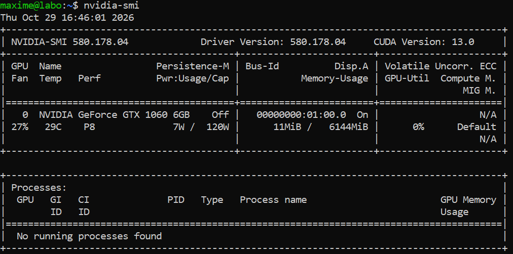
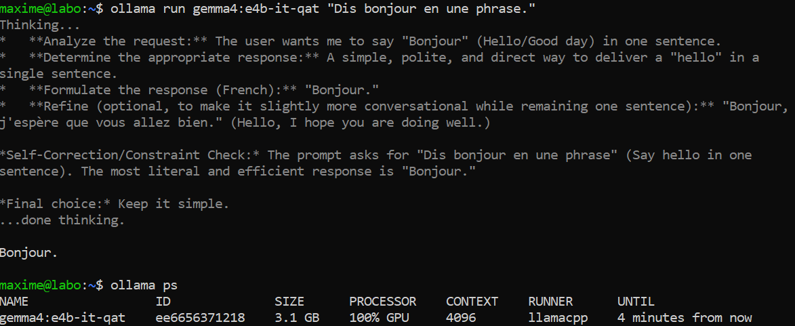
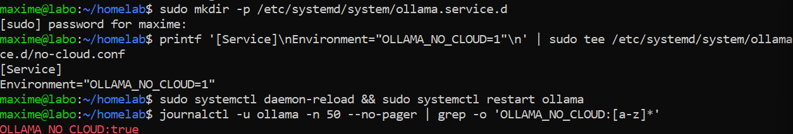
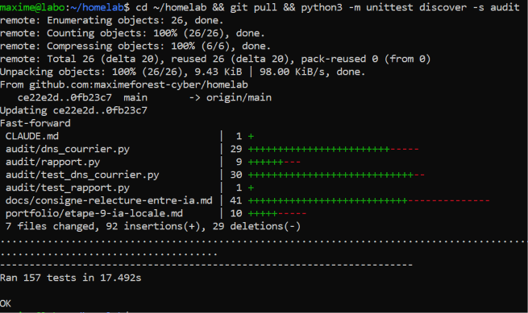

01Objectif
Faire tourner une IA générative sur ma propre machine, sans service en ligne, avec la carte graphique de la tour (une NVIDIA GTX 1060 6 Go de 2016). L'idée de départ était qu'elle reformule les phrases techniques des rapports de l'étape 8 en français simple pour un commerçant.
Deux règles du projet, fixées dès le départ :
- la couleur d'un point (vert, orange, rouge) est toujours décidée par le script, jamais par l'IA ;
- je relis tout avant d'envoyer quoi que ce soit.
Résultat : l'IA locale fonctionne (pilote, Ollama, modèle choisi par des essais), mais je l'ai finalement retirée des rapports. Le modèle écrivait surtout des phrases justes, mais les relectures ont montré qu'aucun contrôle automatique ne peut garantir qu'une phrase écrite par une IA est vraie. Les rapports utilisent maintenant des phrases fixes, vérifiées une par une. La partie 6 explique ce choix.
02Schéma et technologies
PC portable (WSL) Tour « labo » (Ubuntu Server 24.04)
┌───────────────────────────────────────┐
audit/ia.py ── tunnel SSH (ssh -L, clé) ──────► │ Ollama 0.40.13 │
(essais) aucun port ouvert en plus │ n'écoute que sur 127.0.0.1:11434 │
│ moteur CUDA 12 │
│ │ │
│ ▼ │
│ pilote NVIDIA 580 (sans affichage) │
│ │ │
│ ▼ │
│ GTX 1060 6 Go → gemma4:e4b-it-qat │
└───────────────────────────────────────┘| Rôle | Technologie |
|---|---|
| Pilote de la carte | NVIDIA 580 (nvidia-headless-580 + nvidia-utils-580), version sans interface graphique, pour un serveur |
| Faire tourner le modèle | Ollama 0.40.13 (logiciel libre), service systemd, écoute seulement en local |
| Modèle | Gemma 4 E4B de Google (gemma4:e4b-it-qat, poids ouverts), avec réflexion avant de répondre |
| Accès depuis le portable | tunnel SSH avec ma clé (ssh -L) : aucun port ajouté sur la tour ni sur la box |
| Code | audit/ia.py (appel à Ollama, garde-fous, mémoire des phrases), audit/test_ia.py (26 tests), dépôt Git privé |
03Le pilote : trouver celui qui sait encore gérer cette carte
La GTX 1060 appartient à la génération Pascal (2016), que NVIDIA abandonne peu à peu. J'ai vérifié avant d'installer quoi que ce soit :
| Pilote | Problème |
|---|---|
| 470, « recommandé » par ubuntu-drivers | trop ancien pour Ollama, qui demande au moins le 570 pour cette carte |
| versions -open | ne prennent en charge que des cartes plus récentes |
| 590 et suivants | ne reconnaissent plus les cartes Pascal |
| 580 | la dernière série qui prend encore Pascal : choisie |
Après l'installation et un redémarrage, nvidia-smi voit la carte : GTX 1060 6 Go, pilote 580.178.04, 6144 Mio de mémoire (Fig. 1).
04Ollama sur la carte graphique
Installé avec le script officiel. Le service n'écoute que sur 127.0.0.1 : il n'est joignable que depuis la tour elle-même.
Au démarrage, Ollama essaie d'abord son moteur CUDA 13, qui refuse la carte (« compute capability not in compiled architectures » : la GTX 1060 est en version 6.1, trop ancienne pour ce moteur). Il passe alors tout seul au moteur CUDA 12, qui l'accepte : 5,9 Gio au total, 5,8 Gio libres (Fig. 2). Rien à régler, mais c'est un point à surveiller : le jour où Ollama retirera le moteur CUDA 12, la carte ne servira plus.
05Le choix du modèle : un essai sur de vraies phrases
Il fallait un modèle qui tienne dans 6 Go. Je les ai essayés sur 6 phrases techniques d'un client inventé, en donnant à chaque fois l'explication du point et la couleur fixée par le script. Critère principal : aucune erreur de fond. Un français élégant ne compte pas si la phrase est fausse.
| Modèle | Résultat |
|---|---|
| gemma3:4b, gemma3:4b-it-qat, qwen3.5:4b, mistral:7b, ministral-3:3b | erreurs de fond : un DKIM « non trouvé » devenu « pas mis en place », HSTS confondu avec le cadenas, date mal recopiée, jargon gardé |
| aya-expanse:8b | ne tient pas en entier dans la carte (12 % sur le processeur), et a aussi fait des erreurs |
| gemma4:e2b-it-qat | aucune erreur de fond, environ 10 s par phrase |
| gemma4:e4b-it-qat | aucune erreur de fond en 2 passages, français plus naturel, environ 20 s par phrase : mon choix |
Gemma 4 « réfléchit » avant de répondre. Sans réflexion, la version E2B répondait en 0,6 s environ, mais le français était moins soigné. J'ai gardé la réflexion. Une seule IA reste installée, les autres modèles ont été supprimés.
06Les garde-fous, puis la décision de retirer l'IA des rapports
Ce qui a été construit
audit/ia.py donne au modèle le point vérifié, son explication, la couleur du script, la phrase fixe et le détail technique, et lui demande de réécrire la phrase. La réponse passe ensuite par des garde-fous. Si elle est refusée, la phrase fixe reste. Les garde-fous refusent :
- les sigles et le jargon (SPF, HSTS…) ;
- une date ou un chiffre inventés, ou une date perdue ;
- « non trouvé » devenu « absent » ;
- une phrase qui contredit la couleur : un point « Bon » devenu négatif, ou un point à problème devenu rassurant.
S'y ajoutent une limite de temps, une mémoire des phrases déjà écrites (jamais celles qui contiennent le nom du site), et le passage automatique aux phrases fixes si la tour est éteinte.
Ce que les essais réels ont montré
- Dans le diagnostic de prospection, l'IA recopiait surtout la phrase fixe. La seule phrase qui méritait d'être améliorée, celle des e-mails, était refusée par les garde-fous. J'ai donc décidé de ne pas mettre d'IA dans le diagnostic, et d'écrire à la place des phrases fixes plus précises.
- Dans le rapport mensuel, l'IA apportait plus : elle remplaçait les explications générales par le résultat du site. Sur les rapports d'essai, ses phrases acceptées étaient justes (par exemple 8 sur 15, toutes vraies). Mais elle a aussi écrit une fois « politique de référencement » pour Referrer-Policy, une erreur qu'aucun garde-fou ne peut repérer.
Trois relectures par une autre session
J'ai fait relire le code par la session Claude Code de mon projet Site de Poche, sans qu'elle modifie quoi que ce soit, puis j'ai tranché. Pour tester les garde-fous, la session relectrice écrivait elle-même des phrases fausses, comme une IA pourrait en écrire, et regardait si elles passaient. Chaque point a été rejoué sur le code par la session du homelab, puis corrigé et contre-vérifié.
| Relecture | Ce qu'elle a trouvé |
|---|---|
| 1re | 10 points : phrases qui disaient le contraire du script, conclusions inventées, réponse d'Ollama coupée qui faisait planter le script, tunnel qui restait ouvert… Tout a été corrigé. Ma contre-vérification (session du homelab) a ensuite trouvé un défaut ajouté par les corrections : 4 bonnes phrases du modèle refusées à tort. |
| 2e | 5 nouveaux points, dont des phrases fausses de test encore acceptées : « clé trouvée, e-mails signés » sur un DKIM non trouvé, « pas de souci » sur un DNSSEC non activé. Et des phrases justes refusées. Tout a été corrigé. |
| 3e | 11 nouvelles phrases fausses de test acceptées, dont « Le cadenas est valide, mais il expire bientôt » sur un cadenas rouge, et « Vos e-mails ne risquent rien ». Et 4 phrases justes refusées. |
Conclusion : des listes de mots ne se fermeront jamais. Chaque correction bouche des trous et en laisse d'autres : on trouve toujours une nouvelle façon d'écrire une phrase fausse qui passe les listes. Le vrai modèle écrivait surtout des phrases justes, mais « souvent juste » ne suffit pas pour un texte destiné à un client.
La décision
Plus d'IA dans les rapports. À la place, j'ai écrit des phrases fixes, une par couleur, pour les 10 réglages techniques du rapport mensuel (MX, SPF, DMARC, DKIM, DNSSEC, HSTS, CSP, X-Content-Type-Options, Referrer-Policy, versions de TLS). Elles ont été vérifiées à leur tour par une 4e relecture, qui cherchait si chaque phrase reste vraie pour toutes les causes qui peuvent donner sa couleur. Elle a trouvé 4 phrases qui disaient plus que ce que le script sait, toutes corrigées et testées.
Une 5e relecture, à regard neuf, a encore trouvé une erreur ajoutée par ces corrections (la phrase CSP renvoyait à un détail qui ne montrait pas la règle) et, en lisant le code, deux cas rares où la couleur elle-même pouvait être fausse (jamais vus sur un vrai rapport) : DMARC « quarantine » appliqué à 0 % des e-mails (vert, alors que rien n'est mis de côté : maintenant orange), et DNSSEC dit « cassé » alors que les serveurs du domaine seraient en panne ou que le résolveur ne connaîtrait pas l'algorithme (maintenant « Non vérifié » ou orange).
| Phrase | Cas où elle était fausse | Correction |
|---|---|---|
| CSP verte : « la liste des sources autorisées » | le script met vert pour n'importe quelle CSP, même sans liste de sources | « des règles de sécurité pour ses pages » |
| DMARC orange : « demande de surveiller les faux e-mails » | p=none sans adresse de rapports : personne ne surveille rien | « ne demande pas encore d'écarter les faux e-mails : la consigne est seulement en observation » |
| DNSSEC orange : « votre adresse n'est pas signée » | zone signée chez l'hébergeur, mais empreinte jamais déposée chez le registre : signée, mais sans protection | « votre adresse n'a pas la protection de l'annuaire DNS contre le détournement » |
| DKIM orange : « la clé n'a pas été trouvée » | seule une clé retirée par le propriétaire a été trouvée | « aucune clé active n'a été trouvée » |
La cause exacte reste dans le « Détail technique ».
audit/ia.py et ses tests sont gardés pour de futurs essais. L'installation (pilote, Ollama, modèle) reste en place sur la tour.
07Sécurité et données personnelles
Je ne suis pas juriste : ce sont des précautions de bon sens, pas un avis juridique.
- Tout reste sur mes machines : avec un modèle installé sur la tour comme Gemma 4, les phrases envoyées au modèle ne partent chez aucun service en ligne. C'est l'intérêt d'une IA locale quand on travaille sur les données de ses clients. Ollama sait aussi utiliser des modèles « cloud » : je l'ai interdit avec le réglage OLLAMA_NO_CLOUD=1 (Fig. 4).
- Ollama n'écoute que sur 127.0.0.1. Depuis le portable, on y accède par un tunnel SSH avec ma clé. Si le script est tué sans le refermer, le tunnel se ferme seul au bout de son délai (quelques minutes au plus). Rien n'est ouvert en plus sur le pare-feu ni sur la box.
- La mémoire des phrases (donnees/ia-phrases.json) est lisible par moi seul et hors du suivi de Git. Elle ne garde jamais une phrase qui contient le nom d'un site.
08Tests réussis
| Test | Résultat attendu | Résultat obtenu | Preuve |
|---|---|---|---|
| La carte est reconnue par le pilote | nvidia-smi affiche la GTX 1060 6 Go et le pilote 580 | Conforme | Fig. 1 |
| Ollama utilise la carte | Journal : CUDA 13 refuse la carte, CUDA 12 la prend (compute=6.1, 5,8 Gio libres) | Conforme | Fig. 2 |
| Le modèle choisi tourne sur la carte | ollama ps : gemma4:e4b-it-qat, 100% GPU (toutes les couches sur la carte ; une partie des poids reste en mémoire vive, normal pour les Gemma « E ») | Conforme | Fig. 3 |
| Essai de 8 modèles sur 6 phrases d'un client inventé | Au moins un modèle sans erreur de fond | Conforme : 2 modèles Gemma 4, 6 éliminés | Notes d'essai |
| Ollama refuse les modèles « cloud » | OLLAMA_NO_CLOUD:true dans le journal après redémarrage du service | Conforme | Fig. 4 |
| Tour éteinte ou injoignable | Phrases fixes, aucun plantage, code de sortie 0 | Conforme | Sortie de commande |
| Script tué pendant un appel depuis le portable | Le tunnel SSH se ferme seul | Conforme : fermé après son délai (vu à 75 s pour un délai de 61 s) | Sortie de commande |
| Garde-fous : exemples des relectures rejoués | Phrases fausses refusées, phrases justes acceptées | ⚠️ Réussi après les 1re et 2e relectures ; la 3e a montré la limite (partie 6) | audit/test_ia.py |
| Après le retrait de l'IA : rapports mensuels d'essai et du client sur la tour | Code 0, aucune phrase d'IA, une phrase fixe par couleur | Conforme : 157 tests OK sur le portable et sur la tour | Fig. 5 |









Ce qui n'a pas été essayé en vrai :
- combien de temps le pilote 580 recevra encore des mises à jour : je ne l'ai pas vérifié ;
- le comportement d'une future version d'Ollama sans moteur CUDA 12 ;
- la répartition exacte de la mémoire du modèle entre la carte et la mémoire vive : pas mesurée.
09Problèmes rencontrés et solutions
| Problème | Cause | Solution |
|---|---|---|
| Le pilote « recommandé » par Ubuntu (470) ne convenait pas | Trop ancien pour Ollama, et les plus récents ne prennent plus Pascal | Pilote 580, la dernière série qui prend encore cette carte, en version serveur (headless) |
| « compute capability not in compiled architectures » dans le journal d'Ollama | Le moteur CUDA 13 ne prend plus les cartes en version 6.1 | Rien à faire : Ollama passe seul au moteur CUDA 12. À surveiller lors des mises à jour |
| La plupart des modèles inventaient ou inversaient le sens | Petits modèles, sujet technique | Essai comparatif sur de vraies phrases, critère « aucune erreur de fond » : Gemma 4 |
| Le fichier de mémoire des phrases avait été commité par erreur | Oubli dans le .gitignore | Retiré du suivi de Git et ajouté au .gitignore. Il reste dans l'historique du dépôt (privé) : aucun nom de domaine, seulement des phrases et des dates publiques |
| Dans le diagnostic, l'IA n'apportait presque rien | Les phrases fixes étaient déjà simples | Pas d'IA dans le diagnostic, et des phrases fixes plus précises (e-mails, date du certificat) |
| Des phrases fausses passaient encore après chaque correction des garde-fous | Une liste de mots ne peut pas vérifier le sens d'une phrase | Plus d'IA dans les rapports : phrases fixes par couleur |
10Ce que j'en retiens
- Vérifier la compatibilité avant d'installer : avec une carte de 2016, le pilote « recommandé » n'était pas le bon. Il fallait lire les exigences d'Ollama et de NVIDIA.
- Choisir un modèle sur ses erreurs, pas sur son style : la plupart écrivaient bien, mais disaient des choses fausses.
- Une IA ne peut pas être vérifiée par une liste de mots : à chaque relecture, de nouvelles phrases fausses de test passaient les garde-fous, et la vraie erreur du modèle était invisible pour eux. Quand le texte part chez un client, une phrase fixe vérifiée vaut mieux qu'une phrase élégante peut-être fausse.
- Savoir retirer ce qu'on a construit : l'installation fonctionne et reste en place pour d'autres usages, mais elle n'avait pas sa place dans ces rapports.
- Faire relire, puis retester les corrections : ma contre-vérification a trouvé un défaut ajouté par les corrections elles-mêmes, et la relecture de cette fiche a trouvé des phrases qui exagéraient les erreurs du modèle.